✦ Benvenuto nel mondo di ✦
Il mondo ricorda solo ciò che gli è stato permesso di ricordare.
Digita per cercare • Premi ESC per chiudere
✦ Benvenuto nel mondo di ✦

Il mondo ricorda solo ciò che gli è stato permesso di ricordare.

Prima dell'inizio di tutto esisteva soltanto il vuoto. Fu Kosmir a colmarlo, e da quel gesto nacquero il Cosmo e ogni cosa che venne dopo. Per prima cosa diede forma allo Spazio, e dallo Spazio nacque il Tempo. Poi creò la Luce, e dalla Luce nacque l'Oscurità. Infine generò Magia e Antimagia, due facce della stessa Medaglia. I mortali chiamarono queste forze Oscure Materie.
Con il passare del tempo furono creati i primi Corpi Celesti, separati dal Piano Astrale. Su di essi nacquero le prime forme di vita, che assorbirono la coscienza di Kosmir, diventando senzienti. I primi furono gli Antichi, poi vennero le Divinità e a seguire Diavoli e Demoni. Solo infine nacquero i Mortali. Nel Cosmo, ogni creatura dotata di vita e coscienza porta con sé un'impronta chiamata Anima. Quando la creatura muore, la sua Anima si ricongiunge con il Cosmo, ma non sempre questo accade.
Furono i Diavoli a scoprire per primi che le Anime dei Mortali potevano essere sfruttate come fonte di potere. Tuttavia, per reclamarle era necessaria la volontà del mortale stesso, e hanno imparato a farlo attraverso patti, promesse o giuramenti. Le Divinità fecero lo stesso, offrendo però ai mortali un'esistenza ultraterrena nel proprio Dominio. Solo in questo modo un Mortale poteva impedire alla propria Anima di dissolversi nel Cosmo dopo la morte, e ambire così a una sorta di immortalità.
Sulle Anime dei Mortali gravava una tensione crescente, che col tempo sfociò in una terribile guerra, combattuta nel Piano Astrale. Nessuna delle due fazioni, però, poteva immaginare che allo scontro si sarebbero uniti anche i Demoni, che a differenza di Diavoli e Divinità, cercavano le Anime con l'unico scopo di divorarle. Solo così potevano accrescere la propria potenza.
La Trama è un campo di energia invisibile che avvolge ogni cosa. È ovunque, costante, e da essa la Magia prende forma. Nel mondo di Gwernia, gran parte della Fauna e della Flora hanno attinto nei secoli alla Trama in modo naturale, sviluppando proprietà magiche di vario tipo. Per un mortale invece, l'abilità di manipolare la Trama nasce o da un talento innato o si coltiva attraverso anni di studio e disciplina. L'interazione con la Trama genera vibrazioni che si propagano come onde di energia, ciascuna con la propria frequenza. Questa è la ragione per cui si fa largo uso dei Cristalli, la loro struttura naturale è sensibile a queste onde magiche, e permettono loro di propagarla, amplificarla o conservarla nel tempo.
Come tutti sanno, la Magia è divisa in Scuole: Trasmutazione, Illusione, Divinazione, Abiurazione, Ammaliamento, Evocazione, Invocazione e Necromanzia. Questa classificazione raccoglie tutto ciò che i Mortali riescono a creare attingendo alla Trama Magica. Molte di queste Magie, però, non attingono a elementi realmente presenti nel Cosmo, come l'"Illusione" o la "Divinazione", perché non esiste nel Cosmo nulla di tangibile a cui corrispondano. Alcune Magie, invece, attingono a elementi che sono davvero parte del Cosmo, come il fuoco, l'acqua, la gravità, il tempo, lo spazio. Le Magie che attingono direttamente a questi elementi appartengono a gruppi specifici con nomi particolari, come le Furie Elementali, le Oscure Materie, le Forze Cosmiche e la Traccia Primordiale.
Nel Mondo la Magia ha raggiunto livelli notevoli, eppure rimane inaccessibile alla maggior parte dei mortali. È impensabile vedere un contadino muovere la sua zappa magicamente, o un bambino giocare con le illusioni. Ciò nonostante esistono nel mondo tre Grandi Potenze, gruppi di individui capaci di fare pieno uso della Magia: Gli Zeruthar, i Pirati Nobili e il Triplice Occhio. Anche se gli esperti vantano una buona manipolazione della Trama, esistono fenomeni in grado di mettere sulla difensiva persino i più abili tra loro. Le Anomalie Magiche ad esempio, sono eventi capaci di alterare vasti territori in modo imprevedibile e spesso pericoloso, e ricordano a chiunque come la Magia non è una materia per tutti.
A Gwernia si tiene traccia del tempo attraverso la scansione dei Cicli Lunari (a.C.). Ogni Ciclo Lunare corrisponde a un mese, quindi 12 Cicli Lunari corrispondono a un anno, chiamato Arco Ciclico. Gli studiosi hanno suddiviso la storia di Gwernia in Ere, lunghi periodi storici che racchiudono eventi così imponenti da mutare, dal loro inizio alla loro conclusione, l'intero assetto geologico o geopolitico del mondo. Attualmente ci si trova nella 4ª Era, più precisamente nel 6° Ciclo Lunare del 1780° Arco Ciclico.
Un tempo senza cronache scritte, in cui il mondo ha preso forma e le civiltà hanno mosso i primi passi. Gli eventi di quest'epoca sono noti solo attraverso miti e frammenti di tradizione orale.
La prima era documentata di Gwernia, dove i grandi Regni prendono forma, le prime alleanze vengono stipulate e le prime guerre vengono combattute. Le tradizioni naniche, elfiche e umane si consolidano su basi che durano ancora oggi.
Un'Era di relativa stabilità, alternata a crisi profonde, durante la quale le strutture politiche dei grandi Regni si consolidano definitivamente. È proprio in questo periodo che vengono costruite le grandi opere, scritte le cronache più dettagliate e fondate le organizzazioni più importanti del mondo.
Un'Era di grandi sconvolgimenti. Conflitti su scala continentale, spostamenti di popoli e trasformazioni geopolitiche ridisegnano la mappa di Gwernia.
-
...
✦ Mistero da Svelare ✦Esseri Semidivini la cui identità, storia e peso portano con sé segreti che il mondo non ha ancora rivelato. Il loro nome sarà sussurrato durante l'avventura quando sarà il momento.
✦ Mistero da Svelare ✦I più potenti tra i Diavoli, signori indiscussi di un dominio forgiato nell'oppressione. I loro nomi vengono pronunciati a voce bassa anche nell'Averno, poiché lì, il potere, non si rispetta, si teme.
✦ Mistero da Svelare ✦Nati dal Caos, gli Arci-Demoni non conoscono né legge né pietà. La loro sola esistenza è una minaccia per l'ordine cosmico.
✦ Mistero da Svelare ✦...
✦ Mistero da Svelare ✦✦ La Voce del Tutto ✦
La voce di un Oracolo si estende oltre ogni dimensione.
✦ Mistero da Svelare ✦✦ La Voce del Nulla ✦
La voce di un Oracolo si estende oltre ogni dimensione.
✦ Mistero da Svelare ✦✦ Il Reame dei Demoni ✦
Un Mondo fatto di caos e corruzione, dove ogni Dominio è plasmato dalla follia del Demone che lo governa. Finire qui è la sorte peggiore in cui un Mortale possa imbattersi.
✦ Mistero da Svelare ✦✦ Il Reame delle Divinità ✦
Un Mondo dove ogni Divinità ha plasmato il proprio Dominio a propria immagine. Per i mortali, questi Domini rappresentano la promessa più alta a cui aspirare in vita.
✦ Mistero da Svelare ✦✦ Il Reame dei Diavoli ✦
Un Mondo di ordine tirannico e crudeltà calcolata. I Diavoli vi regnano con gerarchia ferrea, perseguendo piani millenari di conquista e corruzione. Ogni Anima dannata diventa risorsa, ogni accordo uno strumento di potere. È un luogo dove anche la sofferenza obbedisce a regole precise.
✦ Mistero da Svelare ✦Lo Zodiaco è un insieme di 12 Costellazioni, ciascuna visibile solo a chi sa dove cercare. Le Costellazioni non sono semplici disegni astrali, ma tracce lasciate da individui la cui volontà, in vita, ha impresso nell'Anima un potere così grande da segnare in modo vivido il Cosmo stesso. Lo Zodiaco Bianco, in particolare, raccoglie le Costellazioni di martiri e protettori. Individui che hanno agito per il bene degli altri, spesso a costo della propria esistenza.

La storia di questa Costellazione è avvolta nel mistero. Scoprila nel corso della tua avventura.

La storia di questa Costellazione è avvolta nel mistero. Scoprila nel corso della tua avventura.

La storia di questa Costellazione è avvolta nel mistero. Scoprila nel corso della tua avventura.

La storia di questa Costellazione è avvolta nel mistero. Scoprila nel corso della tua avventura.

La storia di questa Costellazione è avvolta nel mistero. Scoprila nel corso della tua avventura.

La storia di questa Costellazione è avvolta nel mistero. Scoprila nel corso della tua avventura.
Lo Zodiaco è un insieme di 12 Costellazioni, ciascuna visibile solo a chi sa dove cercare. Le Costellazioni non sono semplici disegni astrali, ma tracce lasciate da individui la cui volontà, in vita, ha impresso nell'Anima un potere così grande da segnare in modo vivido il Cosmo stesso. Lo Zodiaco Nero, in particolare, raccoglie le Costellazioni di tiranni e carnefici. Individui che in vita hanno costruito la propria potenza seminando rovina, indifferenti al prezzo pagato dagli altri.

La storia di questa Costellazione è avvolta nel mistero. Scoprila nel corso della tua avventura.

La storia di questa Costellazione è avvolta nel mistero. Scoprila nel corso della tua avventura.

La storia di questa Costellazione è avvolta nel mistero. Scoprila nel corso della tua avventura.

La storia di questa Costellazione è avvolta nel mistero. Scoprila nel corso della tua avventura.

La storia di questa Costellazione è avvolta nel mistero. Scoprila nel corso della tua avventura.

La storia di questa Costellazione è avvolta nel mistero. Scoprila nel corso della tua avventura.
La Selva Fatata è un Piano che riflette i paesaggi del Mondo Materiale in forme amplificate e distorte. Basse colline che divengono vette impossibili, fitte foreste che si trasformano in labirinti, fiumi che scorrono verso l'alto. Il confine che separa il Mondo materiale dalla Selva Fatata è sottilissimo, al punto che in certi luoghi le due realtà si sovrappongono e le creature possono varcare la soglia senza rendersene conto. Il tempo scorre in modo irregolare nella Selva Fatata. Chi vi trascorre una notte potrebbe scoprire che nel Mondo Materiale sono passati anni, chi vi rimane per anni potrebbe trovare il Mondo Materiale quasi immutato al suo ritorno.
La Coltre Oscura è un Piano di ombra e morte dove la luce non penetra facilmente, e se lo fa si affievolisce progressivamente. Il confine che separa il Mondo Materiale dalla Coltre Oscura viene chiamato Velo. Dove la Selva Fatata amplifica la vita, la Coltre Oscura la prosciuga. I paesaggi appaiono come versioni sbiadite e desolate delle loro controparti, città in rovina, foreste con alberi scheletrici. Persino i suoni vengono attutiti. Il Velo che separa la Coltre Oscura dal Mondo Materiale è più sottile nei luoghi dove la morte è stata abbondante. Vecchi campi di battaglia, vasti cimiteri o luoghi di grande sofferenza. Luoghi nei quali le Anime dei defunti rischiano persino di rimanere intrappolate.
Un oceano infinito di fiamma e brace, dominato dal Mare di Fuoco, la più grande distesa di lava mai concepita. Si dice che al suo margine sorge una Città dove a governare sono gli Efreet, Geni del Fuoco orgogliosi e spietati, che siedono in palazzi di metallo incandescente trattando chiunque entri nel loro territorio come merce o strumento.
Un oceano infinito senza fondo né superficie, dove la luce si dissolve in profondità e la pressione cresce senza fine. I Marid, Geni dell'Acqua, vi abitano costruendo palazzi di corallo nelle correnti più profonde. Si dice siano più eccentrici tra i Geni. Vanitosi, capricciosi e ossessionati dall'espressione di sé. Negli strati superiori, dove l'acqua incontra i bordi del Piano dell'Aria, galleggiano isole di ghiaccio eterno.
Un cielo senza terra né orizzonte, percorso da correnti d'aria e tempeste eterne. Le uniche strutture solide sono le città fluttuanti dei Djinn, Geni dell'Aria, costruite su nuvole solidificate. Si dice che a differenza degli altri Geni, i Djinn sono curiosi e amanti della libertà.
Roccia solida in ogni direzione, interrotta soltanto da caverne enormi e tunnel che si estendono all'infinito. I Dao, Geni della Terra, vi regnano come padroni indiscussi di ogni gemma, ogni filone metallico, ogni cristallo esistente. Si dice siano schiavisti spietati e ossessionati dalla ricchezza minerale, le loro città sono labirinti sotterranei decorati con minerali preziosi, dove chi non possiede è destinato a essere posseduto.
Il Piano Astrale è lo spazio cosmico che separa tutti i Mondi. Viaggiare nel Piano Astrale significa spostarsi con la velocità del pensiero. Non esiste gravità, ma gli oggetti mantengono la loro massa, permettendo il movimento tramite il lancio di piccoli oggetti o la spinta da elementi più grandi. Il tempo nel Piano Astrale scorre alla stessa velocità dei Mondi, ma i suoi effetti sono quasi impercettibili. Le creature non provano fame né invecchiano mentre si trovano in questo piano. Esistono due modi per accedere al Piano Astrale, proiettando la propria forma astrale attraverso l'incantesimo di Proiezione Astrale o entrando fisicamente nel Piano come per l'Incantesimo Spostamento Planare. Il primo metodo è il metodo più sicuro, ma non privo di rischi, poiché lascia il corpo fisico sul Mondo d'origine. Durante la proiezione, il se astrale è collegato al corpo fisico tramite un cordone d'argento lungo circa 3 metri invisibile e intangibile. Pochi eventi possono spezzare questo cordone, come un potente vento psichico o la volontà delle Divinità. Il corpo fisico lasciato indietro rimane vivo ma non richiede cibo, acqua o aria, e non invecchia. Tuttavia, può essere spostato ed è vulnerabile ai danni e alla morte. Se il corpo fisico del viaggiatore viene ucciso, la proiezione astrale si interrompe pochi minuti dopo, causando la sua morte. Se invece il se astrale viene distrutto, il viaggiatore torna al corpo fisico in uno stato di coma. Nel secondo caso invece, non vi è alcun cordone d'argento.
Il Piano Etereo si sovrappone al Mondo Materiale come un mantello invisibile e separa il Mondo Materiale dalla Selva Fatata, dalla Coltre Oscura e dal Dal Quor. Chi si trova nel Piano Etereo può vedere il Mondo Materiale come attraverso una nebbia, ma non può interagire con esso. Quando i viaggiatori attraversano il Confine Etereo, loro e i loro beni si trasformano nei rispettivi equivalenti eterei. Ciò consente un movimento libero, nella maggior parte dei casi, in qualsiasi direzione attraverso la materia solida del piano adiacente. Il viaggio nel Piano Etereo è guidato dalla forza di volontà. Ti muovi dove vuoi alla tua normale velocità di movimento, esiste una percezione di su e giù ma non una vera gravità e gli oggetti rilasciati restano sospesi dove vengono lasciati cadere. Molte creature possono muoversi nel Piano Etereo grazie all'uso della Magia o ad abilità naturali.
✦ Il Piano del Sogno ✦
Esiste un piano di cui anche i più eruditi non sanno nulla. Non è accessibile come gli altri reami, non risponde alle leggi planari conosciute, e i pochi che dicono di averlo visitato tornano con ricordi frammentati e occhi che guardano troppo lontano.
✦ Mistero da Svelare ✦Le Divinità Occulte rappresentano un enigma controverso per i teologi del mondo. Non esistono cronache antiche né testi sacri che ne descrivano l'origine o il ruolo, eppure la loro presenza si avverte più di quella delle Divinità Celesti. Sembra inoltre che i loro Domini siano in realtà Piani di Esistenza sovrapposti a Gwernia, creati a propria immagine.

Identità e dominio di questa Divinità sono custoditi dall'oscurità. Scoprila nel corso della tua avventura.

Identità e dominio di questa Divinità sono custoditi dall'oscurità. Scoprila nel corso della tua avventura.

Identità e dominio di questa Divinità sono custoditi dall'oscurità. Scoprila nel corso della tua avventura.

Identità e dominio di questa Divinità sono custoditi dall'oscurità. Scoprila nel corso della tua avventura.

Identità e dominio di questa Divinità sono custoditi dall'oscurità. Scoprila nel corso della tua avventura.

Identità e dominio di questa Divinità sono custoditi dall'oscurità. Scoprila nel corso della tua avventura.

Identità e dominio di questa Divinità sono custoditi dall'oscurità. Scoprila nel corso della tua avventura.

Identità e dominio di questa Divinità sono custoditi dall'oscurità. Scoprila nel corso della tua avventura.
| Lathander | Disco rosato dell'alba | NB | Divinità Maggiore | Alba, Rinascita, Primavera |
| Tyr | Bilancia su martello da guerra | LB | Divinità Maggiore | Giustizia, Legge |
| Tempus | Fiamma d'argento su scudo | N | Divinità Maggiore | Guerra, Battaglia, Onore |
| Waukeen | Moneta con testa di donna | N | Divinità Maggiore | Commercio, Ricchezza, Patti |
| Bane | Mano nera con dita rosse | LM | Divinità Maggiore | Tirannia, Odio, Paura |
| Shar | Disco nero orlato di viola | NM | Divinità Maggiore | Oscurità, Perdita, Oblio |
| Cyric | Teschio su sole nero | CM | Divinità Maggiore | Menzogna, Follia, Omicidio |
| Mystra | Cerchio di sette stelle | NB | Divinità Intermedia | Magia, Trama |
| Chauntea | Rosa su covone | NB | Divinità Intermedia | Agricoltura, Terra, Vita |
| Ilmater | Mani legate con corda rossa | LB | Divinità Intermedia | Sofferenza, Resistenza, Martirio |
| Silvanus | Foglia di quercia | N | Divinità Intermedia | Natura Selvaggia, Equilibrio |
| Selûne | Occhi in cerchio di luna | CB | Divinità Intermedia | Luna, Navigazione, Erranti |
| Kelemvor | Bilancia su teschio | LN | Divinità Intermedia | Morte, Giudizio |
| Talos | Tre fulmini da un occhio | CM | Divinità Intermedia | Tempeste, Distruzione |
| Umberlee | Onda azzurra con creste bianche | CM | Divinità Intermedia | Mare, Tempeste, Annegamento |
| Loviatar | Frusta a nove code | LM | Divinità Intermedia | Dolore, Tortura |
| Mask | Maschera di velluto nero | CN | Divinità Minore | Ladri, Ombre, Furto |
| Corellon Larethian | Quarto di luna crescente | CB | Divinità Maggiore | Magia, Musica, Arti, Elfi |
| Sehanine Moonbow | Luna piena velata | CB | Divinità Intermedia | Illusione, Viaggi, Luna, Elfi Alti |
| Deep Sashelas | Delfino | CB | Divinità Intermedia | Oceani, Bellezza, Elfi Acquatici |
| Aerdrie Faenya | Silhouette alata di uccello | CB | Divinità Intermedia | Aria, Vento, Libertà, Aarakocra |
| Hanali Celanil | Cuore d'oro | CB | Divinità Intermedia | Amore, Bellezza, Arte Elfiche |
| Labelas Enoreth | Sole al tramonto | CB | Divinità Minore | Tempo, Longevità, Storia |
| Rillifane Rallathil | Grande albero da combattimento | NB | Divinità Minore | Boschi, Natura, Elfi Silvani |
| Solonor Thelandira | Freccia d'argento con penne verdi | NB | Divinità Minore | Caccia, Frecce, Foreste |
| Moradin | Martello da guerra su incudine | LB | Divinità Maggiore | Creazione, Nani, Fabbricazione |
| Berronar Truesilver | Due anelli d'argento intrecciati | LB | Divinità Intermedia | Casa, Onore, Guarigione |
| Clangeddin Silverbeard | Due asce da battaglia incrociate | LB | Divinità Intermedia | Battaglia, Coraggio, Guerra Nanica |
| Dugmaren Brightmantle | Pergamena aperta | CB | Divinità Minore | Invenzione, Scienza, Curiosità |
| Dumathoin | Gemma nella montagna | N | Divinità Intermedia | Miniere, Esplorazione, Segreti |
| Marthammor Duin | Clava con foglie d'acero | NB | Divinità Minore | Viaggiatori, Espatriati, Nomadi |
| Thard Harr | Due asce da mano incrociate | CB | Divinità Minore | Natura Selvaggia, Nani della Jungla |
| Vergadain | Faccia di nano su moneta d'oro | N | Divinità Intermedia | Ricchezza, Commercio, Fortuna |
| Yondalla | Scudo cornuto | LB | Divinità Maggiore | Protezione, Fertilità, Halfling |
| Arvoreen | Due spade corte incrociate | LB | Divinità Minore | Difesa, Vigilanza, Guerra |
| Brandobaris | Piede di halfling su moneta | N | Divinità Minore | Furtività, Avventura, Ladri |
| Cyrrollalee | Porta aperta | LB | Divinità Minore | Amicizia, Fiducia, Casa |
| Sheela Peryroyl | Fiore verde | N | Divinità Intermedia | Natura, Agricoltura, Vento |
| Urogalan | Sagoma nera di cane | LN | Divinità Minore | Terra, Morte, Lutto |
| Garl Glittergold | Nugget d'oro | LB | Divinità Maggiore | Ingegno, Protezione, Umorismo, Gnomi |
| Baervan Wildwanderer | Volto di procione | NB | Divinità Intermedia | Foreste, Viaggi, Gnomi dei Boschi |
| Baravar Cloakshadow | Mantello e pugnale | NB | Divinità Minore | Illusione, Inganno, Protezione |
| Flandal Steelskin | Martello da miniera fiammante | NB | Divinità Minore | Miniere, Lavori in Metallo, Smithcraft |
| Gaerdal Ironhand | Morsa di ferro | LB | Divinità Minore | Protezione, Vigilanza, Combattimento |
| Segojan Earthcaller | Topo illuminate | NB | Divinità Minore | Terra, Comunità, Animali Sotterranei |
| Urdlen | Talpa bianca con artigli | CM | Divinità Minore | Avidità, Crudeltà, Omicidio |
| Gruumsh | Occhio fiammante | CM | Divinità Maggiore | Tempeste, Distruzione, Orchi |
| Bahgtru | Ossa spezzate | CM | Divinità Intermedia | Forza Bruta, Stupidità |
| Ilneval | Spada insanguinata | NM | Divinità Intermedia | Strategia di Guerra, Mezzorchi |
| Luthic | Artiglio d'orco | NM | Divinità Intermedia | Caverne, Fertilità, Famiglie Orciche |
| Shargaas | Teschio rosso su luna nera | NM | Divinità Minore | Oscurità, Furtività, Ladri Orchi |
| Yurtrus | Mano bianca | NM | Divinità Minore | Morte, Malattia, Pestilenza |
| Lolth | Ragno nero | CM | Divinità Maggiore | Ragni, Oscurità, Tradimento, Drow |
| Eilistraee | Drow danzante con spada argentata | CB | Divinità Minore | Amore, Bellezza, Danza, Drow Buoni |
| Ghaunadaur | Occhio viola | CM | Divinità Intermedia | Ooze, Aberrazioni, Reietti |
| Kiaransalee | Mano di donna con anello di ossa | CM | Divinità Minore | Non Morti, Vendetta, Drow |
| Selvetarm | Ragno su spada incrociata | CM | Divinità Minore | Guerrieri Drow, Combattimento |
| Vhaeraun | Maschera nera | CM | Divinità Intermedia | Furto, Scorrerie, Mezzorchi Drow |
| Deep Duerra | Cranio di illithid | LM | Divinità Minore | Psionici, Conquista, Duergar |
| Laduguer | Freccia spezzata | LM | Divinità Intermedia | Artigianato, Protezione, Duergar |
| Annam il Padre di Tutti | Due mani incrociate a palmi uniti | N | Divinità Maggiore | Magia, Fertilità, Sapere, Creatore dei Giganti |
| Stronmaus | Fulmine biforcuto sotto nube e sole | NB | Divinità Maggiore | Sole, Cielo, Tempeste, Giganti delle Tempeste e delle Nuvole |
| Hiatea | Lancia fiammeggiante | N | Divinità Maggiore | Natura, Caccia, Agricoltura, Maternità |
| Grolantor | Clava di legno | CM | Divinità Intermedia | Combattimento, Fame, Giganti delle Colline |
| Memnor | Obelisco nero sottile | NM | Divinità Intermedia | Orgoglio, Inganno, Giganti delle Nuvole Malvagi |
| Skoraeus Stonebones | Stalattite | N | Divinità Intermedia | Pietra, Arte, Giganti di Pietra |
| Surtur | Spada fiammeggiante | LM | Divinità Intermedia | Fuoco, Fabbri, Giganti del Fuoco |
| Thrym | Ascia bipenne bianca | CM | Divinità Intermedia | Gelo, Forza, Giganti del Gelo |
| Iallanis | Ghirlanda di fiori | NB | Divinità Minore | Amore, Misericordia, Perdono |
| Maglubiyet | Ascia insanguinata | LM | Divinità Maggiore | Guerra, Dominio, Goblinoidi |
| Hruggek | Mazza chiodata | CM | Divinità Intermedia | Violenza, Imboscate, Bugbear |
| Kurtulmak | Teschio di gnomo | LM | Divinità Intermedia | Guerra, Miniere, Coboldi |
| Sekolah | Squalo | LM | Divinità Intermedia | Caccia, Squali, Sahuagin |
| Eadro | Spirale d'acqua | N | Divinità Intermedia | Mare, Correnti, Merfolk |
| Blibdoolpoolp | Testa d'aragosta o perla nera | NM | Divinità Intermedia | Follia, Abissi, Kuo-toa |
| Bahamut | Drago d'oro su sfondo azzurro | LB | Divinità Maggiore | Draghi Buoni, Vento, Giustizia |
| Tiamat | Draco a cinque teste | LM | Divinità Maggiore | Draghi Malvagi, Avidità, Tirannide |

Il Regno di Eldoria si estende come un vasto mosaico di biomi diversi tra loro. Foreste intricate, pianure ondulate, montagne imponenti e deserti silenziosi si alternano, componendo un paesaggio ricco e in continuo mutamento. Al centro di questa terra sorge Ravenholm, la Capitale, da cui il sovrano governa appoggiandosi a tre pilastri fondamentali, le Guarnigioni, i Lord conosciuti come i Signori del Commercio e gli Jarl.

Celebre per la sua lungimiranza e il suo senso di giustizia, il sovrano divenne un modello di sovranità illuminata in tutto il continente. La sua riforma più audace riguardò i Consigli di Reggenza, gli organi attraverso cui si esercitava il potere decisionale del Regno, fino ad allora riservati esclusivamente ai grandi casati nobiliari. Il sovrano decise di aprirne l'accesso anche alle classi lavoratrici, rompendo secoli di esclusivismo. La misura, osteggiata all'inizio proprio dai nobili, si rivelò un successo, la gestione delle risorse migliorò, le tensioni sociali si allentarono ed Eldoria divenne un esempio raro nel mondo di Gwernia, sinonimo di prosperità condivisa e innovazione politica.
Il Re governa dalla Capitale e detiene l'autorità suprema su leggi, guerre e trattati. Sotto di lui operano gli Jarl, nominati direttamente dalla Corona, ciascuno a capo di una Regione con ampia autonomia, con potere di intervenire in materia militare, economica e giudiziaria. Rispondono al Re, ma il margine di manovra concesso loro è così ampio da renderli tanto figure di grande influenza quanto potenziali fonti di tensione con la Corona stessa. Scendendo nella gerarchia, i Duchi amministrano le città minori su mandato degli Jarl, mentre gli Anziani Locali governano i villaggi contadini attraverso una gestione di prossimità, spesso non scritta ma radicata nella tradizione.
L'esercito di Eldoria è tra i più organizzati del continente. Al suo vertice siede l'Alto Comandante, che risponde direttamente al Re e coordina sia le operazioni terrestri sia quelle navali. Subito sotto di lui operano sette Comandanti, ognuno responsabile della guarnigione e della sicurezza di uno dei principali capoluoghi del Regno, con piena autonomia tattica nel proprio territorio. Quando però una minaccia supera i confini della propria Regione, ogni Generale è tenuto a coordinarsi con l'Alto Comandante. A seguire vi sono i Generali, responsabili delle Cittadelle minori. Sono loro a inviare le pattuglie nei villaggi limitrofi per controlli o aiuti. Alla base di comando si trovano infine gli Ufficiali, che gestiscono le guardie all'interno di un quartiere, facendo da intermediari ai Generali, ai Comandanti o all'Alto Comandante.
Sul mare, Eldoria può contare sulla Flotta Navale, governata dal Consiglio delle Maree. Al vertice siede il Gran Ammiraglio, che coordina tutte le flotte regionali e risponde direttamente all'Alto Comandante, con lo stesso rango di un Generale. Sotto di lui operano gli Ammiragli, ciascuno a capo del contingente navale di una regione costiera, mentre a comandare le singole navi sono i Capitani.
Ai confini con altri regni sorgono le Fortezze Militari, presidiate da un Ufficiale di Frontiera. Il compito di questi militari è controllare i viaggiatori stranieri per individuare eventuali minacce. Un controllo simile è presente anche alle porte di ogni città, ma limitato alle sole merci, attraverso le Dogane, dove gli Ispettori Doganali riscuotono i dazi sui carichi pregiati, come metalli, spezie e oggetti magici, e verificano i documenti di viaggio. Grazie all'attuale epoca di pace e prosperità, però, questi controlli si sono ridotti notevolmente rispetto al passato.
Il motore economico di Eldoria sono i Lord, conosciuti come Signori del Commercio. Sono nobili di straordinaria ricchezza, ciascuno assegnato a una regione del Regno, con il compito di regolare le rotte commerciali, gestire le tasse sul commercio e sovrintendere a un'estesa rete di Gilde di Mercanti. Ogni anno l'Ordine si riunisce nel Palazzo Reale di Ravenholm, alla presenza del Re, per valutare e aggiornare le politiche commerciali del Regno.
Sotto i Lord vi sono i Marchesi, ognuno a capo di una Gilda di Mercanti nell'area di sua competenza. Ogni Mercante che gestisce un'attività può decidere di affiliarsi a una Gilda per ottenere vantaggi e protezione, in cambio di una percentuale sui propri guadagni.
Una menzione speciale va ai Baroni, figure influenti e facoltose che operano in piena autonomia, al di fuori delle gilde. Sono per esempio proprietari di tenute vinicole, allevatori su larga scala o gestori di miniere particolarmente redditizie. Il loro contributo economico è talmente rilevante da attirare l'attenzione di un Lord, che può proporre alla Corona di conferire loro questo titolo come riconoscimento ufficiale.

Arinthel è un territorio di straordinaria bellezza naturale, dominato da foreste antiche, corsi d'acqua cristallini e pianure inviolate. È il Regno degli Elfi, ma non di un'unica stirpe. Due culture profondamente diverse condividono questa terra da secoli, tenute insieme da rispetto reciproco, necessità strategica e una radice comune mai del tutto dimenticata. Gli Elfi Alti abitano la fascia occidentale, in città di architettura fluida e raffinata, profondamente intrecciate con la Magia. Gli Elfi dei Boschi occupano la fascia orientale, vivendo a stretto contatto con la natura tra alberi millenari e fiumi nascosti. Le loro culture differiscono in quasi ogni aspetto, eppure Arinthel è un Regno unico. La collaborazione tra le due stirpi è silenziosa ma reale. Scambi di informazioni sui movimenti ai confini, coordinamento delle pattuglie nelle zone condivise, scambi commerciali discreti. Non vi è un esercito unificato, ma in caso di guerra aperta le due forze hanno protocolli consolidati per operare insieme.

Sovrano di straordinaria saggezza e determinazione incrollabile. La sua fama è legata soprattutto alla leggendaria incursione nell'Underdark, guidando personalmente le sue armate nelle profondità più insidiose del sottosuolo, liberò centinaia di prigionieri Elfi, tra cui un Alto Saggio catturato dai Drow. Un'impresa che nessuno aveva osato prima. Quell'atto di coraggio e abilità strategica gli garantì un ruolo permanente nel Consiglio dei Saggi, l'organo misto che delibera le questioni di portata straordinaria per l'intero Regno.
Arinthel non ha un unico Sovrano. Il potere è formalmente diviso tra due autorità distinte che governano in modo indipendente le rispettive stirpi, coordinandosi solo quando la situazione lo richiede. Nella fascia occidentale, l'Alto Re degli Elfi Alti governa con l'ausilio degli Alti Consiglieri, ciascuno responsabile di una Regione del Regno. Ogni Alto Consigliere risponde direttamente all'Alto Re e ha piena autorità esecutiva nel proprio territorio, dalla gestione delle risorse alla risoluzione delle dispute. Nella fascia orientale, i quattro Alti Saggi governano ciascuno un avamposto principale lungo il confine. Questi non vengono scelti per sangue, ma per merito e saggezza dimostrati nel tempo. Al momento dell'investitura ricevono un Anello chiamato Galadhir, simbolo del loro ruolo e della fiducia riposta dalla comunità. Le decisioni che riguardano l'intero Regno vengono deliberate nel Consiglio dei Saggi, un organo che si riunisce solo in risposta a minacce esterne o eventi di grande portata.
Come in politica, anche in campo militare le due stirpi operano con strutture separate ma complementari. Gli Elfi Alti presidiano il confine occidentale, gli Elfi dei Boschi quello orientale. In caso di guerra aperta, i due eserciti possono convergere su protocolli condivisi, ma non hanno mai avuto bisogno di un comando unificato permanente.
La difesa è affidata agli Aiglosar, le Lame di Arinthel, un ordine militare d'élite addestrato nella capitale sotto la guida dell'Alto Maethor, Maestro delle Lame. Nelle città secondarie il comando locale è affidato all'Aern'Thalan. Sul mare opera la Vela di Lórilath, la flotta navale di Arinthel, responsabile della difesa costiera e del controllo del traffico mercantile. I Rondolyn sono i capi pattuglia che si occupano di sorvegliare il territorio interno del Regno, muovendosi con i loro manipoli lungo sentieri, foreste e montagne per tenerlo sotto controllo.
La difesa del Regno è affidata agli Alti Saggi, che si appoggiano ai Tirmaethor per comandare le forze negli avamposti principali, mentre nei presidi minori questo compito spetta ai Taurdír. A pattugliare sentieri, nodi forestali e accessi nascosti sono invece i Taurethrim, le Guardie Silvane, che fungono da occhi e orecchie del Regno lungo il confine orientale, quello condiviso con il Regno di Eldoria.
L'economia delle due stirpi seguono filosofie radicalmente diverse, che riflettono il loro modo di stare al mondo.
Per loro la prosperità non si misura in oro, ma nell'equilibrio tra Magia, arte e risorse naturali. A regolare la produzione è il Circolo di Lúnareth, un consiglio composto da Maghi, artigiani d'eccellenza e filosofi, che decide come distribuire le risorse, quali attività artigianali privilegiare e come gestire i rapporti commerciali con il mondo esterno. Il commercio con altre razze esiste, ma è selettivo. Vengono scambiati solo prodotti di alto valore simbolico o strategico, e sempre dopo un'attenta valutazione delle implicazioni politiche e culturali dell'accordo.
La loro economia si fonda su caccia, raccolta, artigianato e scambi mirati. Non accumulano ricchezze, né hanno interesse a farlo. Il rispetto per la natura vale più di qualunque bene materiale, e questo principio non è retorica ma pratica quotidiana. Ogni risorsa prelevata dal bosco non deve essere sprecata. Gli scambi con l'esterno sono rari e sempre valutati dall'Alto Saggio competente per quell'area, che considera l'impatto ambientale e culturale dell'accordo prima di qualunque considerazione economica. La loro forza non è nella quantità, ma nell'autosufficienza. Raramente dipendono da altri e raramente hanno bisogno di chiedere.
I Drow di Eilistraee rappresentano una rottura radicale con la tirannia di Lolth. Rifugiati in superficie, questi elfi oscuri hanno abbracciato i principi della loro Dea, redenzione, libertà, bellezza e armonia con il mondo. La loro società è egualitaria, pacifica e votata a dimostrare che i Drow possono vivere diversamente da come il resto del continente li immagina. A differenza della rigida gerarchia Lolthiana, i seguaci di Eilistraee adottano una struttura comunitaria fluida, fatta di esuli e fuggitivi che vivono nascosti e in costante movimento. A guidare queste comunità sono le Sacerdotesse, che non comandano ma consigliano e mediano, conducendo i rituali notturni di canto e danza sotto la luna. Vivono in accampamenti temporanei, grotte naturali, rovine abbandonate e radure nascoste, questo per sfuggire a chi li cerca.
Northgul è una terra di freddo spietato, fatta di pianure ghiacciate, montagne imponenti e fiumi trasformati in cristallo. Qui i Tiefling, cacciati e disprezzati dal resto del continente, hanno trovato rifugio nelle loro cittadelle di pietra, strette insieme sotto la protezione della Dinastia Xhair, che porta nelle vene il sangue di Zariel. Furono gli Xhair a salvare i Tiefling durante le crociate umane, con battaglie, astuzie e parole capaci di fermare gli eserciti, e nessuno lo ha dimenticato. La loro voce non è rispettata per il titolo che portano, ma per ciò che hanno compiuto. Chi prova a opporsi a loro viene fermato dagli stessi Tiefling, perché tutti sanno quanto costerebbe restare senza quella guida. Le difficoltà, però, non sono mai finite, perché i Goliath attaccano senza tregua per strappare loro i territori di caccia. I Tiefling non vivono in una società fatta di leggi e di regole scritte, la loro è piuttosto una anarchia che sa governarsi da sola. Tutto ciò che hanno sofferto li ha resi uniti e capaci di scegliere con la testa, senza bisogno che qualcuno imponga loro come comportarsi. Con il passare del tempo, fuori dai confini gli sguardi si sono fatti meno ostili. Sono cominciati gli scambi con le città vicine, come Grindwall, e la moneta ha ormai quasi del tutto sostituito il baratto. Tra i Tiefling c'è già chi si domanda se non sia arrivato il momento di smettere di sopravvivere e cominciare finalmente a reclamare un posto nel mondo. Non è raro, ormai, incontrarne qualcuno che cammina per le strade del Regno di Eldoria, o che abbia giò ruoli di spicco.
Tra montagne aguzze come lame e steppe selvagge si estende il dominio degli Orchi, creature tenaci e brutali che vivono seguendo la volontà del loro Dio Gruumsh. Qui il potere non si eredita da un sovrano, si conquista con la forza e si difende con il sangue. Il più temuto di tutti diventa Capo Guerra, e la sua autorità è assoluta perché risponde soltanto al volere divino. Le cicatrici contano più delle parole, e il rispetto si guadagna a colpi di lama. Ogni villaggio è retto da un Capo Guerriero che governa con astuzia e con la forza, sapendo bene di essere allo stesso tempo il padrone del proprio villaggio e una pedina in un gioco più grande. Gli Orchi guardano tutte le altre stirpi con sospetto e con odio, e quell'odio viene ricambiato senza esitazione.
Erengad è una terra indomabile ai confini di Eldoria, dove le colline si levano come bastioni naturali e i fiumi corrono impetuosi tra boschi intricati e prati selvaggi, e dove la vita segue ancora il ritmo antico della natura. È da questo territorio che hanno origine i Tabaxi. Vivono di istinto, di caccia e di difesa del proprio territorio, obbedendo a gerarchie brutali che nessuna legge riesce ad ammorbidire. Le poche eccezioni che la gente conosce, quelle che commerciano o abitano tra i popoli civilizzati, sono cuccioli strappati alla loro terra, spesso catturati apposta, portati lontano e cresciuti come si cresce un animale domestico, o peggio ancora, come si tiene uno schiavo. A Erengad si arriva soltanto dal mare, e da lì attraverso la Foresta di Ebonreach, le Colline dei Giganti o la Discesa di Kaldrath. Ancora oggi resta una terra inesplorata, e proprio per questo troppo spesso sottovalutata.

Un tempo i cieli di questa terra erano solcati dalle maestose ali dei Draghi, creature di immensa potenza e saggezza la cui presenza plasmò le fondamenta stesse della civiltà dragonide. Le città di quell'epoca, imponenti e solenni, furono costruite per onorarli. Vie ampie, piazze aperte e torri slanciate verso il cielo celebravano l'unione tra Draghi e Dragonidi. Oggi quell'era è lontana, ma il suo peso si sente ancora in ogni pietra di Drakelang, la capitale che sostituì Pyraxis dopo la sua distruzione. L'Impero è retto da un Imperatore il cui titolo incarna tanto l'autorità terrena quanto il legame spirituale con i sovrani dei cieli. La società dragonide è costruita sul merito, sulla disciplina e sull'onore. Coraggio, lealtà e integrità non sono ideali astratti ma obblighi concreti che regolano ogni aspetto della vita civile e militare. Le Divinità principali venerate in Draconia sono Bahamut e Tiamat. Secondo le cronache antiche, prima che la rivalità li dividesse, i due unirono i propri poteri per generare Kael'Zor, un Drago Gemmato Semidivino destinato a incarnare l'equilibrio tra le stirpi cromatiche e quelle metalliche.

Un Sovrano che nessuno riesce davvero a leggere fino in fondo. Governa l'Impero con autorità assoluta, e i suoi occhi arrivano dove gli altri non vedono ancora nulla, tanto che molte sue decisioni si rivelano giuste solo dopo anni. Ma la stessa mente che sa guardare così lontano lo porta a scelte che non conoscono mezze misure, e chi lo ascolta esce dalla sala del trono ammirato oppure atterrito, a volte entrambe le cose. La sua scelta più discussa resta l'Editto delle Scaglie Nobili, con cui ha proclamato i Draghi Metallici guida morale e politica dell'Impero, confinando i Cromatici in ruoli minori e chiudendo loro le porte del potere. Un provvedimento che ha portato ordine dentro i confini, ma che ha acceso tra le stirpi una tensione palpabile.
Draconia è una monarchia assoluta retta dal Codice delle Scaglie, un insieme di leggi e principi che regola ogni aspetto della vita civile, militare e spirituale dei Dragonidi. L'autorità dell'Imperatore è incontestabile, ma il suo governo si avvale di un apparato gerarchico preciso che garantisce continuità e ordine su tutto il territorio imperiale.
Il Concilio delle Scaglie, riunisce cinque Dragonidi Metallici, che assumono il titolo di Thur'Valaan. A loro spetta il governo delle grandi Regioni imperiali, e vegliano perché le leggi e la disciplina rimangano fedeli ai principi draconici. Possono consigliare l'Imperatore e discutere con lui, ma quando la sua volontà è stata espressa nessuno di loro ha il potere di contraddirla.
Sotto il Concilio operano gli Zharvyr, governatori scelti dal Concilio e confermati dall'Imperatore. Amministrano gli uffici, le tasse, le risorse e le truppe delle province con grande libertà d'azione. Le città sono invece affidate agli Ossaghur, che rispondono dell'ordine cittadino assicurandosi che il Codice venga rispettato ogni giorno. I rapporti con le nazioni straniere sono infine nelle mani del Vekhtaar, una sorta di Ambasciatore.
L'esercito di Draconia porta il nome di Legione delle Scaglie. Questa grande forza militare è divisa secondo i compiti che ciascun reparto deve svolgere, e al comando di ogni reparto siede un Kraadmir. Quando la guerra bussa alle porte dell'Impero, i Kraadmir lasciano si riuniscono a corte per decidere insieme all'Imperatore come affrontarla. I reparti prevedono la Guardia Imperiale, che ha il compito di vegliare la Capitale, e forze militari con vari compiti, c'è chi presidia le Regioni e sorveglia le frontiere, chi raccoglie ricognitori, esploratori e messaggeri, chi forma la fanteria e guida gli assedi abbattendo tutto ciò che sbarra il cammino, e infine vi sono i Forgiafiamma, artigiani e alchimisti che forniscono a tutta la Legione gli strumenti di cui ha bisogno.
Ogni maschio di stirpe Metallica deve prestare servizio per almeno cinque anni, e solo al termine di quel periodo può decidere se restare sotto le armi o tornare alla vita di prima. In tempo di guerra, però, chiunque può essere richiamato. Disertare o mostrarsi codardi equivale a tradire l'Impero, e la pena è la Rifusione del Sangue, un rituale che spezza il legame con l'eredità draconica e toglie al condannato il suo respiro e il nome che portava. I Dragonidi di stirpe Cromatica non possono entrare nelle truppe regolari. Un editto imperiale li destina ai rifornimenti, ai trasporti e ai lavori più pesanti degli accampamenti, sempre sotto lo sguardo di ufficiali Metallici. È un ruolo che semina rancore tra i Cromatici, un rancore che soltanto il terrore della Rifusione riesce a tenere a freno.
Draconia non è un Impero di mercanti, ma una macchina economica ordinata, sorvegliata e perfettamente consapevole di sé. Sulla carta l'economia è nelle mani dei privati, e dunque miniere, fucine e gilde appartengono ai cittadini, ma nessuno può lavorare senza una Concessione Imperiale. Ogni licenza è legata a un Giuramento d'Onore e a una parte dei guadagni che finisce nel Tesoro Imperiale. Chi rompe il patto perde ogni diritto e non ha modo di appellarsi. Nel pensiero dragonide, del resto, nulla appartiene davvero a chi lo tiene tra le mani, perché ogni bene appartiene all'Imperatore e attraverso di lui a tutto l'Impero. Dunque, l'Impero tiene le redini di ogni attività, perché decide quanto si può estrarre, a quale prezzo vendere, quali strade percorrere e chi ha il permesso di commerciare oltre i confini. È un controllo così attento che nessuno riesce ad accumulare una ricchezza tanto grande da poter minacciare il trono. Al centro di ogni scambio vi sono i cristalli, che non portano soltanto denaro, ma anche fama e prestigio a qualunque arcanista riesca a procurarseli.

Murondir è un Regno scolpito tra montagne immense, dove le indomabili stirpi naniche hanno innalzato roccaforti che nessun nemico è mai riuscito a espugnare. Ogni regione è governata da un potente Clan, che ne custodisce le leggi, le difese e le ricchezze. Dalle miniere di Murondir affiorano minerali di ogni sorta, e dalle mani dei Nani escono opere di tale maestria da renderli celebri in tutto il continente. Tra le meraviglie del Regno brilla la leggendaria Forgia di Vulkrand, nascosta nel cuore ardente del vulcano Stilvur, ai cui piedi sorge anche la capitale Helstrom. Al confine con i regni degli uomini si erge invece il Vallo di Kargrom, una muraglia di pietra così vasta da separare Murondir dal resto del mondo, simbolo della forza dei Nani e insieme del loro fiero isolamento.

Sovrano dallo spirito inflessibile. Governa con pugno di ferro e mette l'isolamento del suo popolo e la purezza delle tradizioni naniche al di sopra di ogni altra cosa. Diffida degli stranieri, delle usanze venute da fuori e di chiunque osi mettere in dubbio l'antico ordine dei Clan. La sua opera più imponente è il completamento delle Mura del Vallo di Kargrom, una barriera colossale immaginata centinaia di Archi Ciclici fa e portata a termine soltanto sotto il suo Regno. Un'impresa titanica, che per Thorgar è motivo di assoluto orgoglio, ma che non tutti i Nani accolgono allo stesso modo. C'è chi nel Vallo vede una difesa necessaria, e chi un ostacolo a comdoe rotte commerciali.
Murondir è una monarchia soltanto in apparenza, perché il Re siede sul trono ma il potere vero è diviso tra i Clan, che sono le radici stesse della società nanica. Ogni Clan governa il proprio territorio con grande libertà e ne guida la politica, la difesa e i commerci secondo le usanze che ha ereditato. Il Re di Helstrom è il primo tra i Capi Clan, non un sovrano assoluto che impone la sua volontà dall'alto, ma il punto di riferimento che tiene unito un Regno destinato altrimenti a spezzarsi in faide interne.
Le decisioni che riguardano l'intero Regno vengono prese nell'Assemblea dei Clan, dove i Capi Clan siedono l'uno accanto all'altro come pari. Il Re presiede l'adunanza e può opporre il suo veto, ma quando la maggioranza dei Clan sostiene una scelta, ignorarla costa caro. Questa struttura rende Murondir salda e compatta nei momenti di pericolo, e insieme lenta e faticosa ogni volta che serve decidere in fretta e a una sola voce.
La difesa di Murondir si fonda su due pilastri, le Guardie di Clan, forze militari proprie di ogni Clan che presidiano i loro territori, e la Legione di Helstrom, l'esercito regio che risponde direttamente al Re e interviene dove la minaccia supera le capacità del singolo Clan. In tempo di pace i due corpi operano in modo indipendente, in caso di guerra aperta, le Guardie di Clan si uniscono alla Legione sotto un comando unificato.
Al vertice dell'esercito regio siede il Barak'Dur, il Gran Comandante, scelto dal Re e responsabile della strategia militare dell'intero Regno. Sotto di lui operano i Karak'Nal, i Comandanti di Fortezza, ciascuno alla guida delle Legioni che affiancano i Clan oppure del baluardo che difende il Vallo di Kargrom, dove chiunque voglia varcare i confini di Murondir viene sottoposto a controlli severissimi. Vengono poi i Thurak'Zan, i Sergenti di Miniera, una figura che esiste soltanto a Murondir, soldati addestrati a combattere nel buio delle gallerie e a difendere i tunnel, indispensabili in un Regno che vive e respira sottoterra.
La Guardia del Mare è la flotta navale di Murondir, ridotta ma efficiente, che presidia le coste rocciose e le vie fluviali che scendono dalle montagne. Non è una forza d'attacco, ma garantisce che nessuno possa aggirare il Vallo di Kargrom via mare.
L'economia di Murondir è la più specializzata di tutta Gwernia, perché ogni cosa ruota attorno allo scavo e alla lavorazione. Nel ventre delle montagne dormono minerali rari, cristalli e pietre preziose che nessun altro luogo del continente possiede. Questo rende i Nani fornitori indispensabili persino per i regni con cui i rapporti sono tesi.
La produzione è nelle mani delle Gilde di Artigiani, che riuniscono fabbri, scultori della pietra, gioiellieri e alchimisti. Ogni Gilda risponde al Capo Clan del territorio in cui opera e gli versa una parte dei guadagni. Non sono semplici associazioni di mestiere, perché dettano legge nel proprio campo, fissano i livelli di qualità, istruiscono gli apprendisti e stabiliscono chi ha il diritto di lavorare e chi no. A Murondir un artigiano cacciato dalla sua Gilda non ha più alcun avvenire.
Il gioiello dell'economia nanica è il Cratere di Barundin, una meraviglia della natura incastonata tra le montagne di Kraghammer. Al suo interno vi è un meteorite che i Nani chiamano "La Lacrima di Moradin", questo perché il popolo dei Nani crede che Moradin, il Dio Fabbro, abbia inviato quel dono dal cielo come benedizione per i suoi figli. Il meteorite possiede al suo interno un metallo unico, chiamato Metallo Stellare. Gli unici capaci di piegarlo sono i fabbri della Forgia di Vulkrand, nel cuore del vulcano Stilvur. Qui si lavorano i materiali più preziosi e più ostinati, e ne nascono armi, oggetti magici e opere che non hanno eguali. L'accesso alla Forgia è regolato dal Re in persona, e vi possono operare soltanto i maestri riconosciuti dalle Gilde più importanti. Ciò che esce da quelle fiamme porta il Marchio di Vulkrand, garanzia di perfezione conosciuta in ogni angolo del continente, e un oggetto che lo reca vale il triplo di qualunque altro fatto altrove.
Il commercio con l'esterno esiste, ma è ridotto e sorvegliato con attenzione. Re Thorgar impone dazi altissimi su tutto ciò che lascia il Regno e si riserva il diritto di annullare qualsiasi accordo che non sia stato approvato dal Clan competente e confermato dalla Corona.
Vraithgar è un dominio avvolto in un manto perenne di umidità e malessere, fatto di paludi nebbiose e terreni inospitali che sembrano respingere ogni forma di vita ordinata. Non esiste un divieto formale d'accesso, ma il pericolo intrinseco di questo luogo basta a farlo considerare proibito da quasi tutti. Sopravvivere a un viaggio attraverso Vraithgar non porta prestigio, ma suscita timore. Si tramanda che un tempo qui prosperasse un Regno fiorente, prima di cadere vittima di innumerevoli tragedie, tra cui il famigerato Morbo Spettrale. Il terrore di questo flagello è tale che pochi osano avventurarsi in queste terre, temendo non solo di contrarre la malattia, ma di tornare marchiati dall'ombra di una terra maledetta. Chi vuole raggiungerla ha tre strade oltre quella del mare, attraverso il Passo di Brumalvento, il Passo di Durin'skald, o il Passo Ghiacciato di Northgul.
Nelle distese verdi di Omgar, il clima mite e la terra generosa hanno dato vita all'unico angolo tranquillo di Gwernia. È qui che nascono i Tartarugoidi, creature dall'aspetto animalesco che nascondono però un'intelligenza acuta, una saggezza senza pari e un animo profondamente buono. Hanno costruito villaggi, coltivato tradizioni e dato forma a una società guidata dagli Anziani Saggi. Il poco che si conosce di loro arriva dai racconti degli avventurieri approdati sulle loro coste. Alcuni di questi non sono più ripartiti, conquistati dalla semplicità e dalla pace di quel luogo, ed è stato proprio il loro arrivo ad avvicinare i Tartarugoidi alla cultura del mondo esterno.
L'Underdark è una rete sconfinata di caverne, cunicoli, abissi e gallerie che si stende sotto l'intera superficie di Gwernia, a profondità che nessuna mappa ha mai raccontato per intero. Qui la luce del sole non arriva mai, e a rischiarare quelle distese sotterranee restano il bagliore dei funghi giganti, i riflessi dei cristalli e i fuochi delle civiltà che hanno imparato a vivere senza il giorno. Nell'Underdark il tempo scorre in un modo diverso, e il senso dell'orientamento si perde dopo poche ore di cammino. Le regole della superficie, quaggiù, non valgono nulla. Ad abitare queste profondità sono creature pericolose e fin troppo note, come i Goblin, i Drow, i Duergar e gli Svirfneblin..
I Duergar sono i nani grigi dell'Underdark, forgiati da secoli di isolamento e adattamento a un ambiente che non perdona. Dove i nani di superficie celebrano la tradizione e la fratellanza, i Duergar hanno abbracciato la conquista, il lavoro forzato e un pragmatismo brutale che non lascia spazio a sentimentalismi. La loro società è una tirannia feudale industriale fondata su due pilastri, la produzione e la schiavitù. Vivono nelle Città Fortezza, centri industriali paragonabili per potenza alle grandi città Drow, ma privi di ogni elemento decorativo. Nessuna scultura celebrativa, nessun ornamento superfluo, tutto ciò che esiste serve a produrre, difendere o conquistare.
I Drow vivono in una società teocratica matriarcale spietata, costruita interamente attorno al culto di Lolth, la Regina dei Ragni. Ogni aspetto della vita nell'Underdark è plasmato dalla volontà capricciosa della Dea, che promuove tradimento, ambizione e crudeltà come virtù supreme. Solo i forti meritano di sopravvivere, e chi elimina i deboli, anche all'interno della propria famiglia, viene ricompensato con favore divino. Le città Drow sono dominate da complesse reti di casate nobiliari in eterna competizione. Ogni casata funziona come un'organizzazione simile a una corporazione criminale, con eserciti privati, reti di spie, alleanze commerciali e obiettivi politici ben precisi. Il rango determina potere, accesso alle risorse e prossimità al favore di Lolth. Le donne detengono ogni posizione di autorità reale, come sacerdotesse, matriarche e comandanti. Gli uomini possono eccellere come guerrieri o maghi, ma rimangono sempre in una posizione subalterna, strumenti utili finché servono.
...
✦ Da Sbloccare ✦
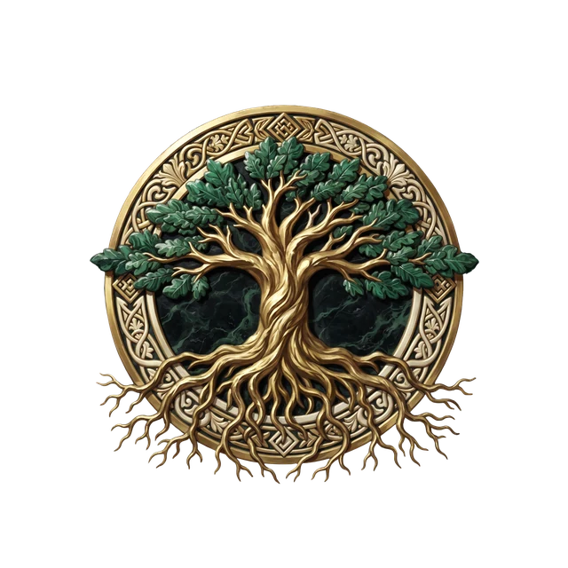
"Il Mondo è la nostra prima Casa"
L'Alleanza degli Evergreen è una fratellanza nomade nata dagli Elfi dei Boschi della Selva Fatata e votata a un'unica causa, preservare l'equilibrio del mondo naturale contro chiunque lo pieghi al profitto o alla distruzione. Dove i Circoli Druidici pregano e contemplano, gli Evergreen agiscono, pattugliando foreste, rotte migratorie e sorgenti sacre, strappando all'estinzione le specie più rare e colpendo con sabotaggi mirati chi devasta la terra. Non guardano alla razza né alla fede di chi li affianca, ma soltanto alla sua disponibilità a camminare per giorni e a battersi per qualcosa che non gli appartiene. Le loro uniche mura sono le Radure Sacre sparse per il mondo, riconosciute soltanto da chi ne fa parte.
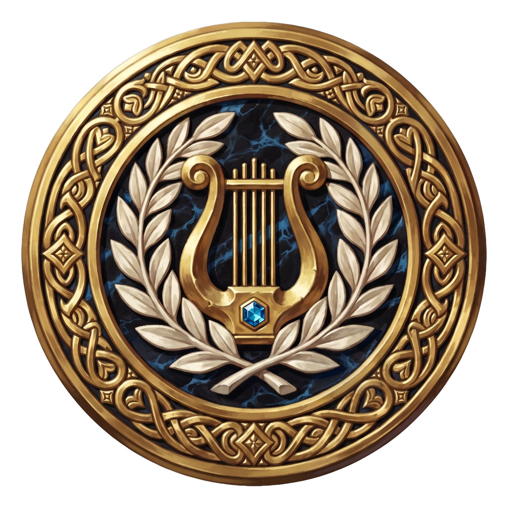
Sorta a Bardville, nel regno di Eldoria, l'Accademia di Brema è molto più di una scuola d'arte, è il luogo in cui il talento diventa memoria viva di un intero popolo. Tra le sue sale convivono musica, teatro, poesia e ogni forma di espressione, e chiunque abbia qualcosa da dire può trovarvi un palcoscenico. Guadagnarsi da vivere, però, è tutt'altra faccenda, riservata a chi unisce genio, disciplina e integrità. Al vertice siede il Decano, che porta anche il titolo di Jarl, ma sotto la superficie brillante ribollono ego smisurati e rivalità capaci di trasformarsi in faide lunghe una vita. Il sogno di ogni allievo ha un nome, Musicante di Brema, un titolo che apre le porte delle corti nobiliari o del Silverlight, il primo e unico teatro mai costruito.
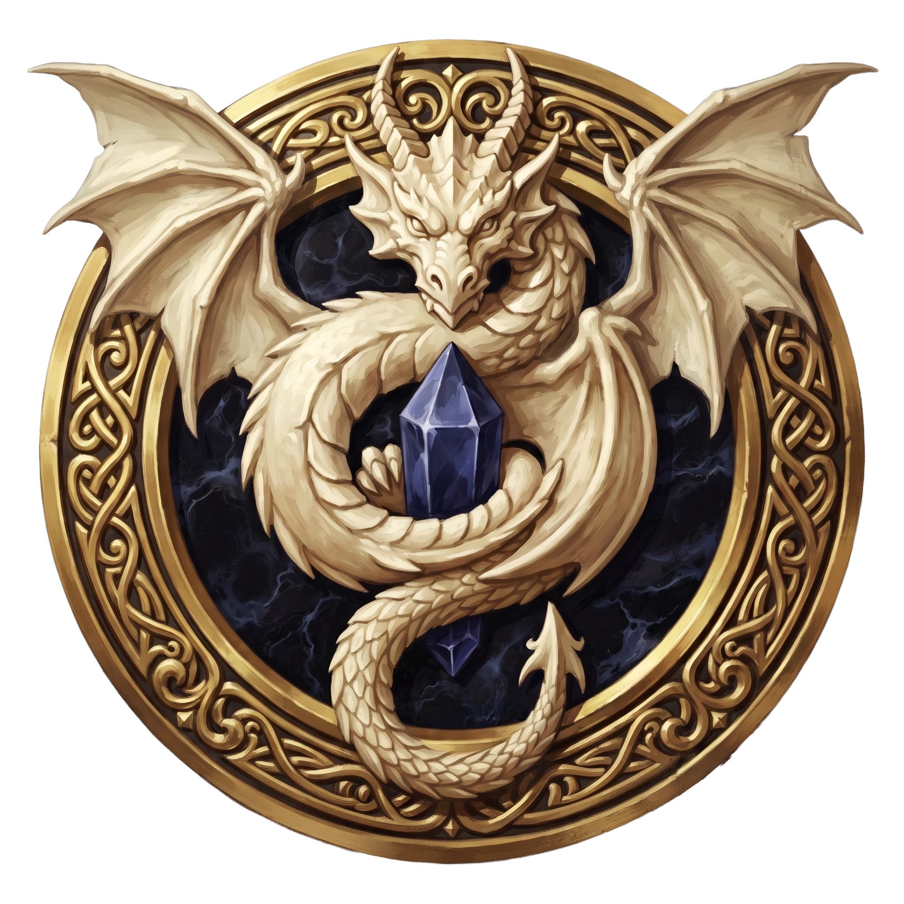
I Custodi di Kael'Zor vivono all'ombra di una perdita antica e di una promessa mai infranta. Il mondo li conosce come cercatori instancabili dei Frammenti di Cuore di Drago, ma la loro vera vocazione è vegliare sulle Terre Infrante, quelle lande spezzate e ostili che sognano di purificare e restituire all'antico splendore. Sono maestri impareggiabili nell'estrarre e lavorare i Cristalli, un'arte che nessun altro popolo padroneggia e che li rende tanto ricchi quanto indispensabili, al punto che persino l'Imperatore ha rimesso quelle terre nelle loro mani. Chi li incontra avverte in loro una devozione quasi sacra, come se ogni Frammento raccolto fosse un passo verso qualcosa di più grande.
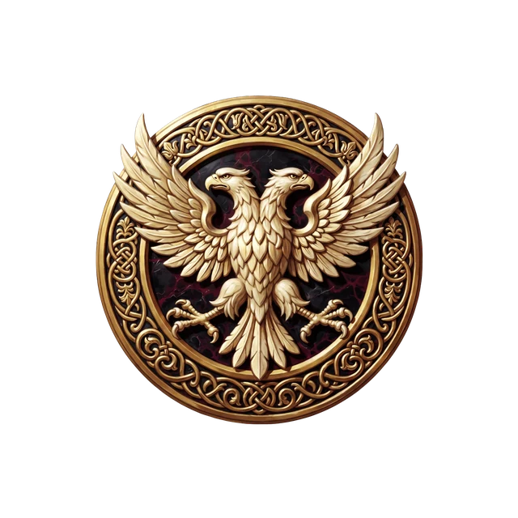
Quando a Eldoria sorge un problema che la Guarnigione non può affrontare, entra in gioco la Gilda dell'Aquila Dorata. Ha sede a Ravenholm, dove occupa un edificio che funge insieme da quartier generale, punto di ritrovo e centro operativo per i suoi membri. Cuore della gilda è la Bacheca degli incarichi, una grande tavola su cui vengono affissi richieste, contratti e taglie di ogni genere, dalla semplice consulenza cittadina all'indagine su fenomeni arcani. Maghi, combattenti e specialisti di ogni tipo consultano la bacheca, scelgono i lavori più adatti alle proprie capacità e si riuniscono spesso in piccole squadre affiatate per portarli a termine insieme. Ogni incarico completato frutta un compenso e accresce la reputazione di chi lo svolge, permettendogli col tempo di salire di grado, accedere a missioni più prestigiose e ottenere ricompense maggiori. La gilda è finanziata direttamente dalla Corona, e per molti giovani di Eldoria, unirsi all'Aquila Dorata significa trovare un posto a cui appartenere, dei compagni con cui crescere e un modo per trasformare il proprio talento in un mestiere.
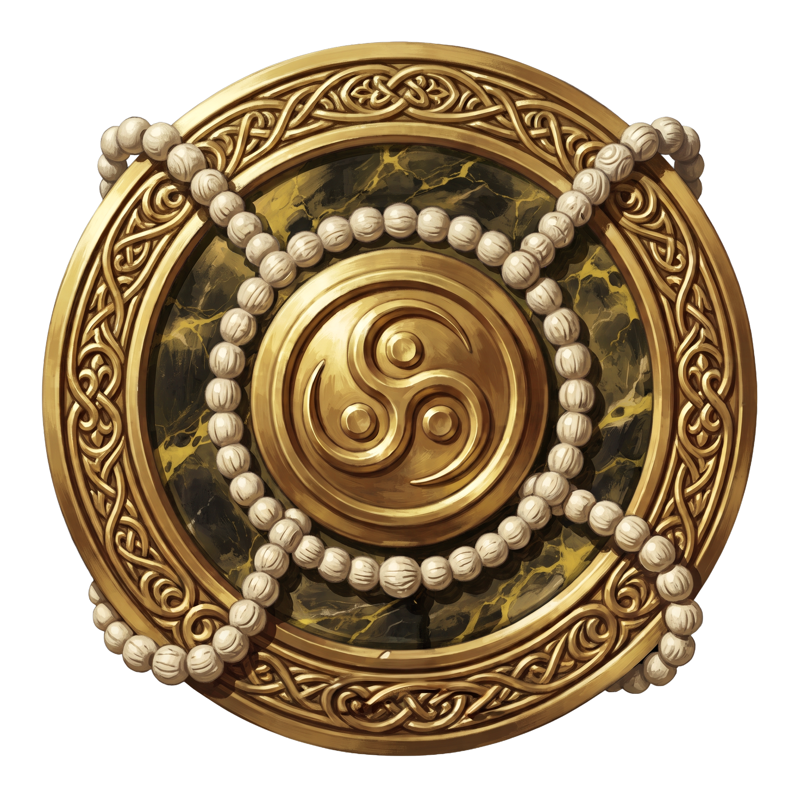
Nel cuore di Nadesh sorge il Bujinkan Dojo, dove si insegna che il nemico più difficile da sconfiggere è sempre sé stessi. Qui l'addestramento marziale non è mai fine a sé stesso, ma cammina di pari passo con la meditazione, la consapevolezza e la ricerca di un equilibrio tra mente, corpo e spirito. I progressi di un allievo non si misurano soltanto dai colpi che sa portare, ma dalla persona che diventa lungo la via. Il Dojo vive di donazioni, di corsi e del sostegno della famiglia Wong, che da generazioni gode di un'autonomia riconosciuta dallo stesso trono, governando secondo tradizioni proprie senza dover rendere conto di ogni scelta. Chi ne varca la soglia cerca disciplina, e spesso vi trova molto di più.
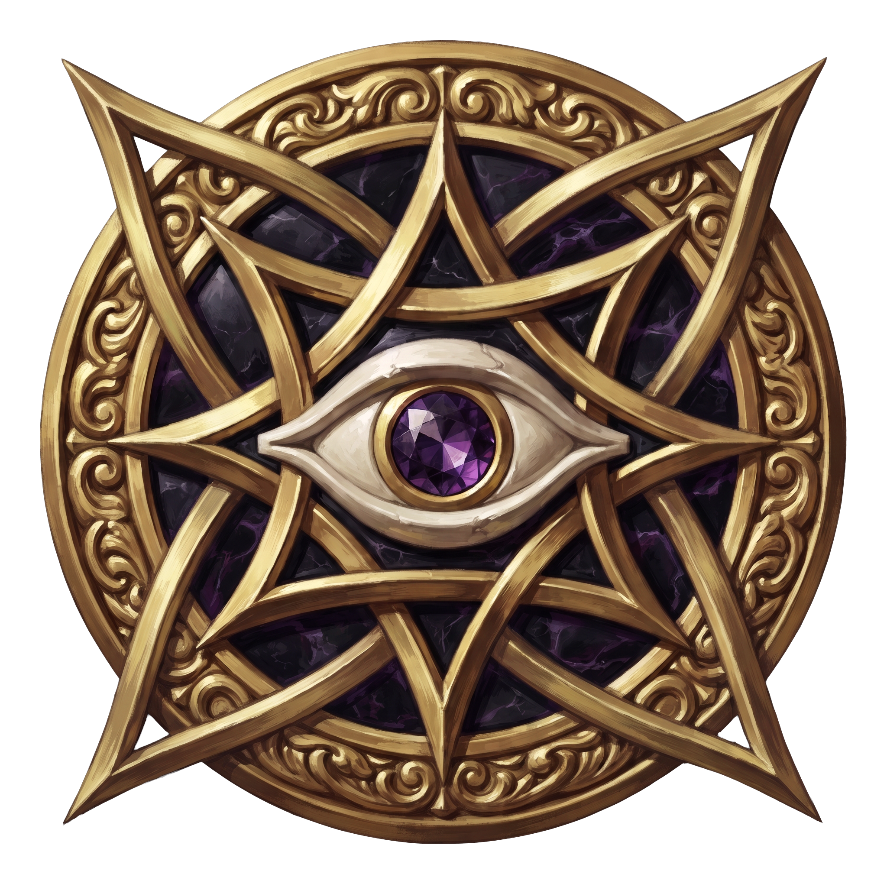
Pochi ordini sono avvolti nel mistero quanto i Vider Melius, i Divinatori della Torre di Avorio. Alla loro fortezza non si giunge viaggiando, ma ricevendo un invito che pare sigillato dal fato stesso, e chi ha tentato di raggiungerla senza, giura di non aver trovato nulla, ammesso che sia tornato a raccontarlo. Non credono in un futuro già scritto, ma in un intreccio sterminato di possibilità in continuo mutamento. La loro arte non consiste nel predire ciò che accadrà, bensì nel discernere, tra tutte le strade percorribili, quella più probabile, con una precisione che lascia pochissimo spazio all'errore. Consultarli è un privilegio raro, e il loro consiglio ha il peso di una sentenza.


Queste figure e i segreti che custodiscono potranno essere svelati soltanto nel corso della tua avventura.
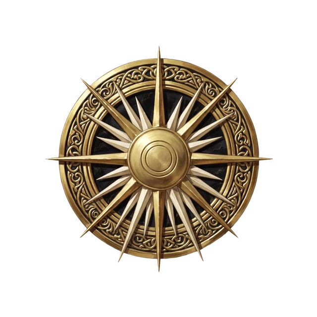
"Ogni Ombra è figlia della Luce"
Il Sancta Fides è il volto ufficiale della fede in Eldoria, il culto del Dio-Sole Aureleth che nel corso dei secoli ha finito per oscurare quasi tutte le altre Divinità del Regno. La sua forza nasce dal legame profondo con la Monarchia, che ne è la principale sostenitrice, ma anche dalla devozione di un popolo che gli affida eredità, offerte e speranze. Nobili, mercanti e sovrani ne cercano la benedizione prima di ogni grande impresa, convinti che nulla di importante possa riuscire senza la luce di Aureleth a vegliarvi sopra. Il suo motto è una frase rassicurante che moltissimi recitano senza chiedersi davvero cosa significhi.
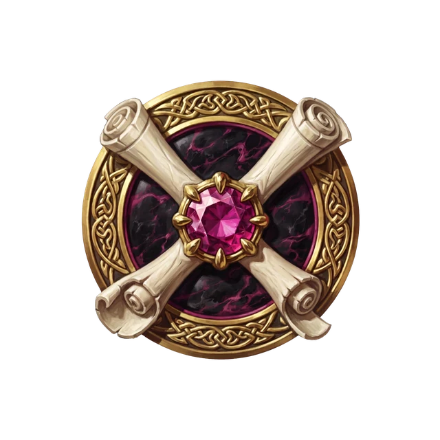
Sospesa nel mare di Elyndrial, l'Enclave di Rodhrass raccoglie alcuni dei maghi più capaci che il mondo abbia mai conosciuto. Il loro scopo è esplorare, comprendere e tramandare i misteri dell'Arcano liberi da vincoli morali, politici o religiosi, eppure mai con incoscienza, perché a Rodhrass la conoscenza è sacra ma la sua ricerca ha delle regole. Chi vi è ammesso firma un patto vincolante che gli garantisce risorse, biblioteche e libertà di viaggio, in cambio dell'esclusiva sulla propria rappresentanza, tanto che ingaggiare un suo Mago significa trattare prima con l'Enclave. Il suo nome apre le corti dei sovrani e incute rispetto ovunque, ma porta con sé anche un'ombra, la condanna di Rinnegato, riservata a chi ne tradisce la filosofia e destinato a non trovare più pace in nessun regno.


Queste figure e i segreti che custodiscono potranno essere svelati soltanto nel corso della tua avventura.
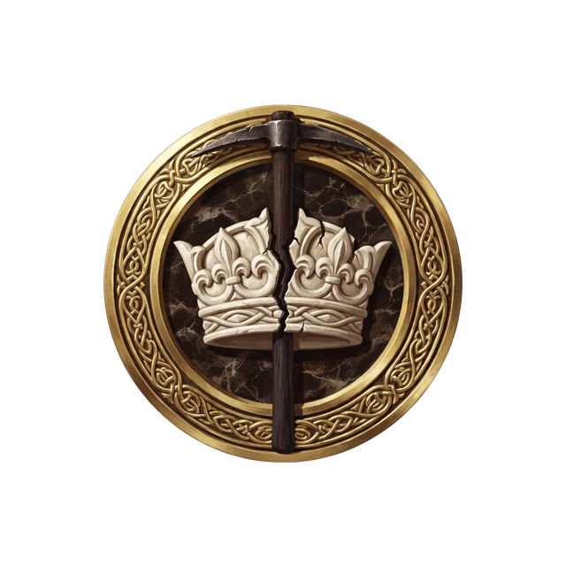
"Ogni Clan è sovrano della propria Roccia"
La Legione di Karak-Dûm è nata dalla visione di un solo nano, il primo Capo Clan Brûndar Kuldhor, e da un principio che ancora la guida, ogni Clan è sovrano della propria roccia. Metà organizzazione paramilitare e metà impresa commerciale, vive delle miniere di Murondir, di cui esplora, controlla e sfrutta ogni vena, trattando minerali e gemme con i mercanti di superficie e, lontano da occhi indiscreti, con i Duergar dell'Underdark. Le sue casse si gonfiano tanto del commercio quanto di saccheggi e sabotaggi camuffati da incidenti minerari, e ciò che guadagna torna in infrastrutture, equipaggiamento e oggetti magici. Alcuni di quegli oggetti finiscono sul mercato, altri restano per uso interno, altri ancora prendono strade che conosce soltanto il Signore della Rocca.
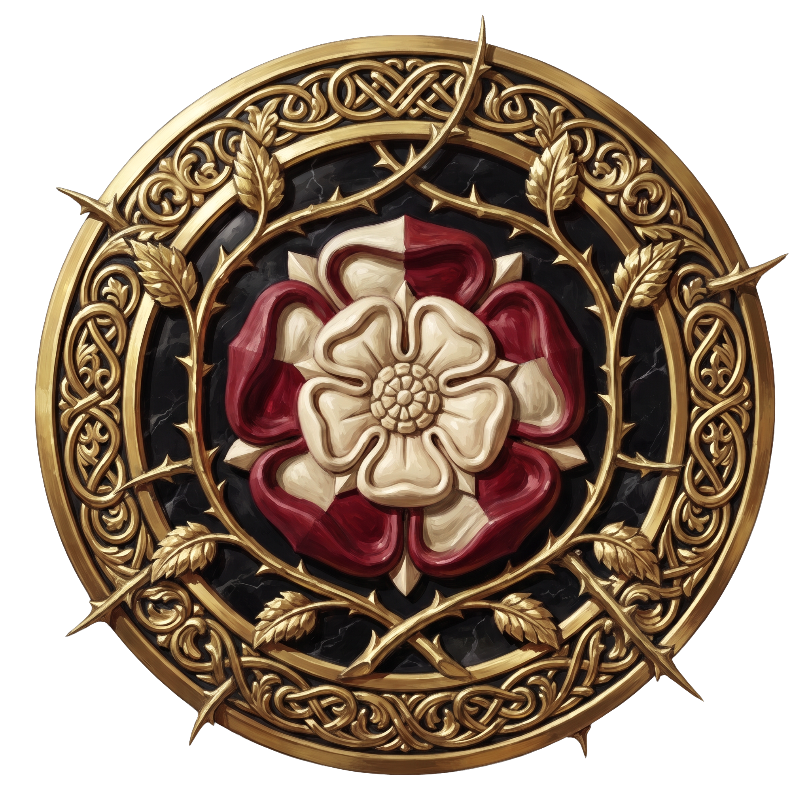
Nessuno sa dire con certezza se l'Ordine della Rosa esista davvero, o se sia soltanto il nome che la gente ha dato a una serie di coincidenze troppo perfette per essere casuali. Ciò che si sa è poco, e sempre di seconda mano. Ogni tanto qualcuno di potente svanisce, un mercante troppo ricco, un nobile con troppi segreti, un religioso con troppa influenza, e non resta traccia di violenza, soltanto un'assenza. La stanza è in ordine, i documenti al loro posto, la cena ancora sul tavolo, e l'unica cosa fuori posto è una Rosa Rossa, recisa di fresco e posata con cura dove non può essere un caso. Chi la trova capisce di non trovarsi davanti a una scomparsa qualunque.
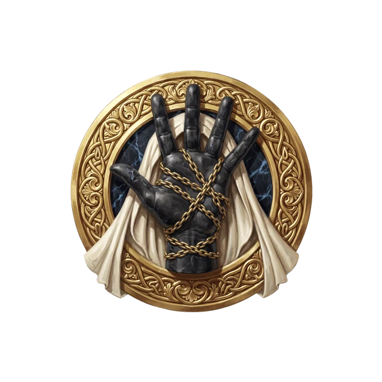
Un tempo le Mani d'Ombra furono qualcosa di quasi nobile, ladri che sottraevano ai ricchi e ai tiranni per restituire ai deboli, ma la fame di potere ha corroso quell'ideale fino a rovesciarlo. Oggi la Fratellanza è il cuore pulsante del crimine di interi reami e risponde agli ordini dell'Alto Conclave, un'assemblea segreta che dai suoi domini occulti spartisce territori, negozia alleanze e decide chi debba pagare per aver infranto il Codice. Si racconta che il suo trono sia la Rocca delle Ombre, un'immensa fortezza nascosta nella Coltre Oscura. Non ci si unisce per volontà propria, ma per cooptazione, siglando un Vincolo di Sangue con un boss influente e dimostrando il proprio valore nell'assassinio, nello spionaggio o nell'arte di risolvere problemi che nessun altro oserebbe affrontare.

"Nulla da Temere, Tutto da Proteggere"
Il Sacro Corvo è un ristretto gruppo di individui la cui ambiguità non è mai stata sciolta. C'è chi giura che si siano votati a proteggere Belaver dalle piaghe che la divorano dall'interno, l'indifferenza e la corruzione, e chi è invece convinto che siano proprio loro l'origine di quel marciume. Ogni membro nasconde il proprio nome dietro uno pseudonimo, per sfuggire alle ritorsioni di chiunque ne disapprovi l'operato, e si dice che agiscano per pura scelta, senza mai ricevere un compenso. Del motto, quali cose non vadano temute e quali invece protette resta il segreto meglio custodito della città.

"Dalla carne senza Anima nasce l'ordine"
Il Rigor Mortis non venera la Non Morte per fanatismo, ma per una convinzione fredda e lucida, che in essa si celi la forma più pura di ordine. Dove gli altri vedono orrore, loro vedono potenziale, una forza instancabile, una memoria che non si consuma, l'assenza di desideri e paure capaci di corrompere. Non sognano orde di cadaveri lanciate alla conquista del mondo, né la fine della vita, ma qualcosa di ben più inquietante nella sua pazienza, sostituire poco a poco le parti instabili della società con esseri affidabili, controllabili e privi di ambizioni, ottimi per i lavori forzati o per il comparto militare. Dalla loro Cripta del Crepuscolo, nascosta in un luogo che nessuno ha mai trovato, lavorano in silenzio a una società perfetta.
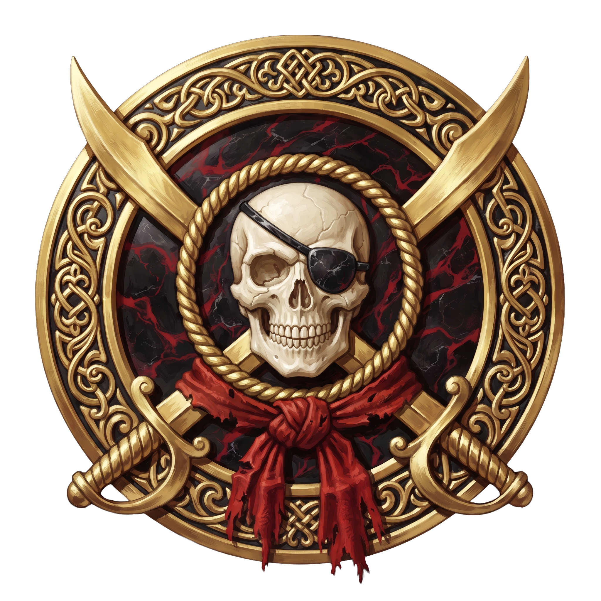
Nei tumultuosi mari orientali, dove si erge Crevasse, la Città dei Pirati, la Piaga Rossa incarna il volto più selvaggio della pirateria. Dove i Pirati Nobili impongono un Codice, la Piaga Rossa vive nell'anarchia più totale, rifiutando ogni legge che non sia quella della forza e della sopravvivenza. La sua flotta conta una trentina di navi guidate da bucanieri tanto spietati quanto imprevedibili, e per unirsi alle sue file non servono meriti né lignaggio, ma soltanto un tributo in tesori abbastanza ricco da farsi notare. È una marea rossa che sale e travolge, e chiunque solchi quelle acque impara presto a temerne il nome.
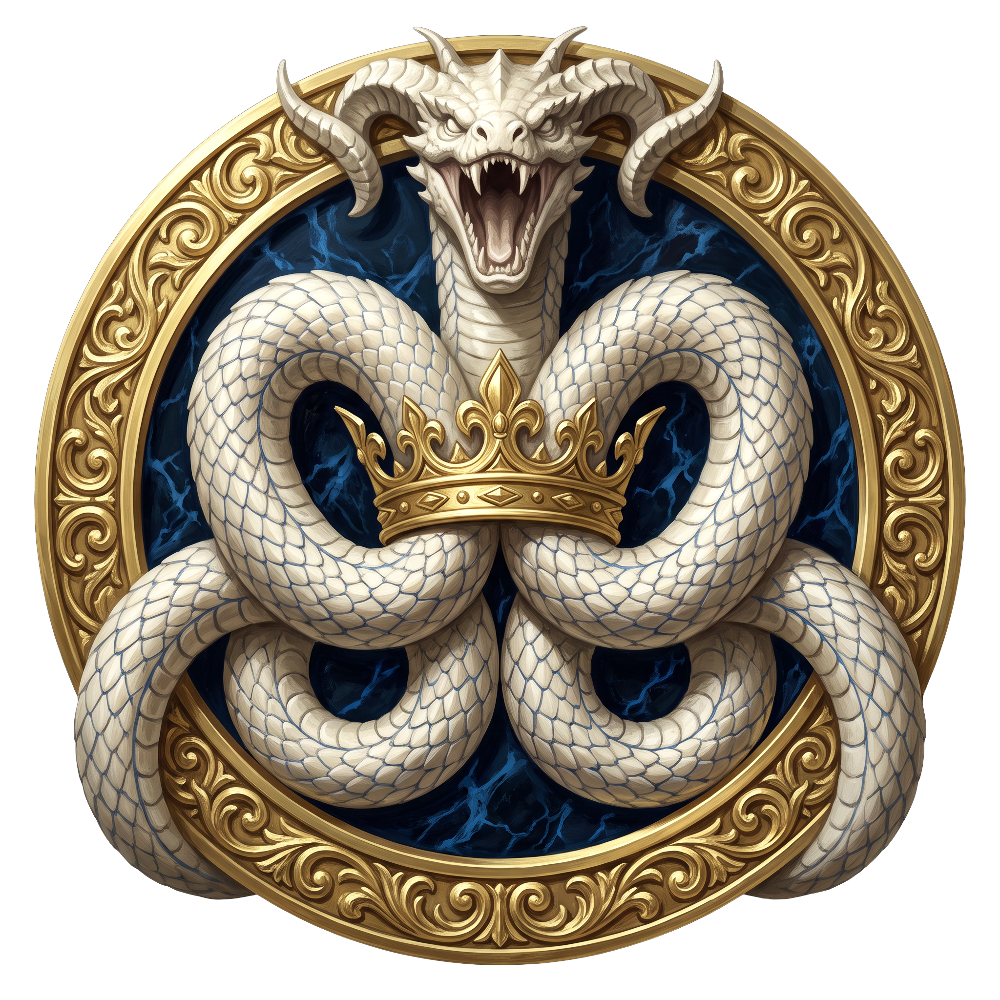
Negli stessi mari orientali, i Pirati Nobili rappresentano l'ordine che sa nascere dal caos. Sono cinque, e ciascuno comanda la propria nave con un'autorità così temuta da gelare il sangue a chiunque ne incroci la rotta. A tenerli uniti è un Codice di leggi codificato dal leggendario Bartholomew, il primo e più grande di tutti i pirati, un insieme di regole che tiene a bada l'anarchia e mantiene un fragile equilibrio tra predatori. La tradizione vuole che, di fronte alla guerra o a una minaccia straordinaria, i cinque si riuniscano per eleggere tra le proprie file il Re dei Pirati, una figura temporanea ma assoluta, la cui parola diventa legge quando non c'è più tempo per discutere. A Crevasse, perfino i fuorilegge hanno i loro sovrani.


Queste figure e i segreti che custodiscono potranno essere svelati soltanto nel corso della tua avventura.